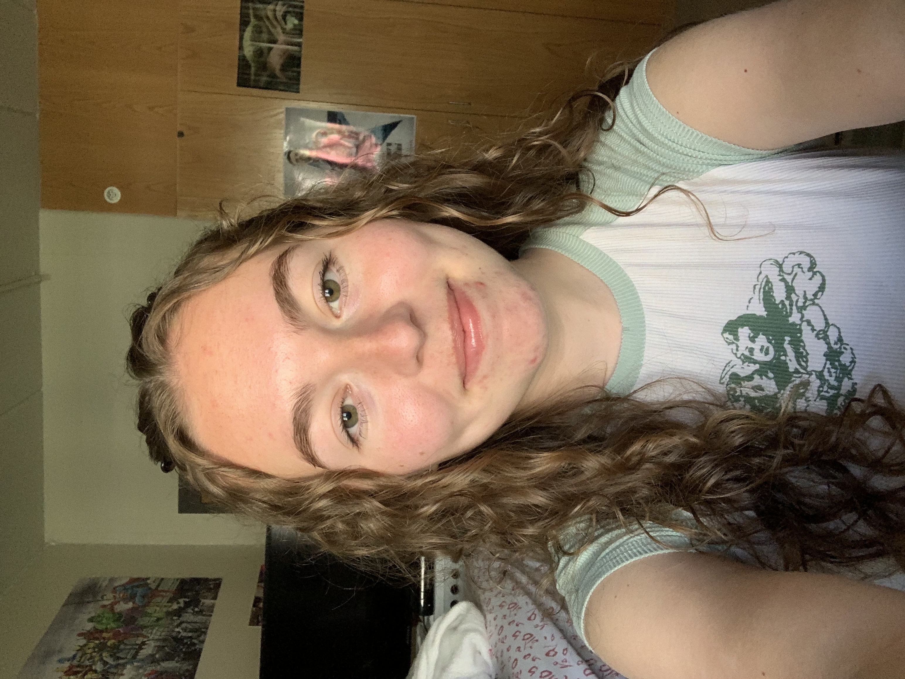

Contact
Madeline Yaeger
13460 Falcon View Ct
Bristow, VA 20136

Skills and Specialties
Langauges, Platforms, Frameworks
HTML, CSS, WordPress
Applications
Adobe Creative Cloud (Photoshop, InDesign, Illustrator), Microsoft Office (Word, Excel, PowerPoint), Sublime Text
Education
James Madison University, Harrisonburg, VA
School of Media Arts & Design
Creative Advertising concentration
Minor of General Business
Expected Graduation Date: May 2025
GPA: 3.875/4.0
Awards:
President's list: Fall 2021, Spring 2022, & Fall 2023
Dean's list: Fall 2022 & Spring 2023
Experience
January 2024 - Present
James Madison University, Harrisonburg, VA
James Madison University Undergraduate Research Journal
- Design team editor
- Collaborating with a team a of editors to produce and publish an undergraduate reseach journal for James Madison University
- Outlining and styling content in InDesign
May 2021 - August 2022
Make My Day Please, Bristow, VA
- Independent Contractor for a pet-sitting business
- Created bonds with customers to build trust
- Communicated with potential customers and current customers to provide information about the companies policies and offer comfort for the wellbeing of their pets.
- Recruited new customers to the business
June 2019 - August 2019
Pizza Boli's, Gainesville, VA
- Effectively communicated with customers
- Successfully resolved customer complaints and demonstrated problem-solving skills
- Conducted transactions in person, over the phone, and online
- Supervised product packaging
- Maintained cleaniness of the restaurant